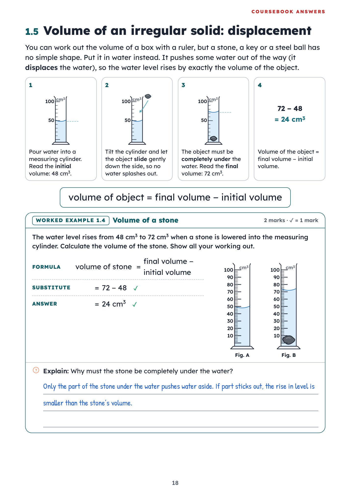
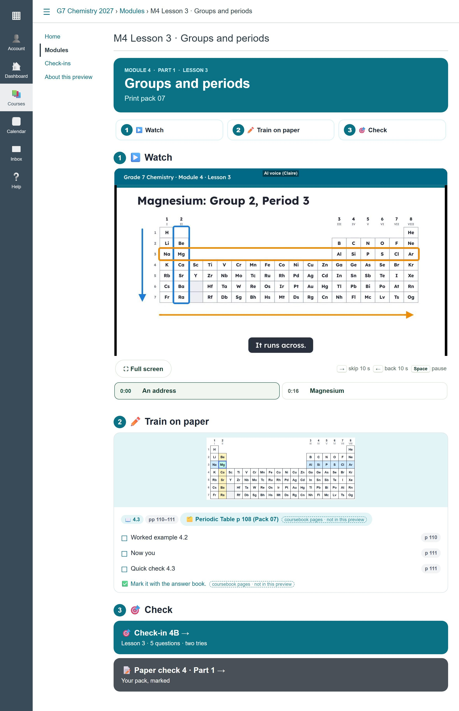
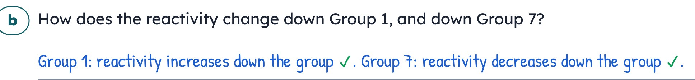
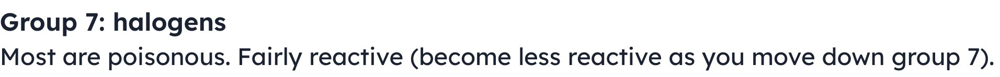

© 2026 Noel Robert


Press F for full screen
Grade 7 Science · being prepared for 2027
Grade 7 Science, built backwards from exactly what earns the marks.
Two coursebooks, a Canvas course and our own lesson videos.
The coursebooks · Chemistry and Physics
Written for twelve-year-olds.

Model an answer
Draw it, then think it through.
- 1Draw itSketch the cylinder before and after. Mark every value: 48 cm³ and 72 cm³.
- 2Know and needKnow: initial 48 cm³, final 72 cm³. Need: the volume of the stone.
- 3Choose the rulevolume of object = final volume − initial volume
- 4Work it outOne step per line: = 72 − 48 ✓ substitute · = 24 cm³ ✓ answer with unit. A tick for each mark.
- 5Check itDoes it make sense? The stone must be completely under the water, or the rise is too small.
Click the page to open it large.
▸ Grade 7 Chemistry answer book, p 18 · Worked example 1.4
The Canvas course
One lesson page, everything in one place.
Click to open this page ▸
1 WatchOur own two-minute video
2 Train on paperThe exact book pages, and a tick list
3 Check-inFive questions that mark themselves. A wrong answer names the page to go back to.
4 Start here and modulesWhat you must be able to do, plus the printable practice pack
7 modules33 lessons22 check-ins15 videos
Click here to try the course ▸
A public preview copy of a Canvas course being prepared for 2027, with no learner data.
Our lesson videos
Everyone has seen AI explainer videos. Ours only speak our words.
1What earns the marks

The memo gives a mark for this line.
2Our notes

The book teaches exactly that line.
3The script
Group seven, the halogens: most are poisonous. Fairly reactive. They become less reactive as you move down Group seven.
The script uses the book's words. Nothing added.
4The voice
 AI voice of Mr R
AI voice of Mr RThe AI voice of Mr R reads it.
Generic videos explain the topic. Ours teach the mark.
Try one
Press play.
Every voice is AI and labelled. Ryan reads the summaries.
Expertise is what makes AI useful.
Noel Robert, Physical Sciences teacher. Coursebooks shared on request.